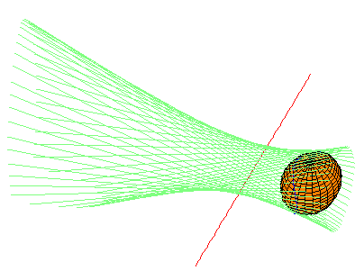
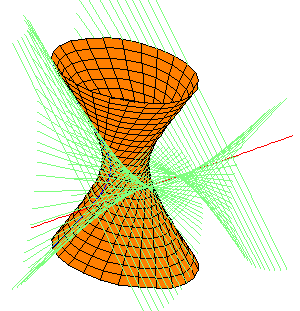
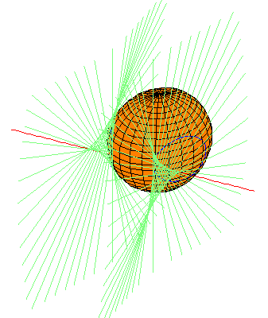
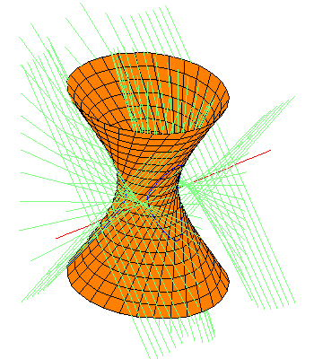

Back to Table of Contents.
Back to Table of Contents.
We give many pictures to illustrate the main theorem concerning the families of quadrics tangent to the same lines as those that meet two lines and are tangent to a given quadric. For these, the two fixed lines are the x-axis and the y-z line at infinity. Common transversals to these lines are the lines perpendicular to the x axis, in the usual Euclidean sense. For each of four quadrics (two spheres and two hyperboloids of one sheet), we show other quadrics having the same common transversals and tangents. Specifically, we show quadrics from each of the 12 companion families that contain real quadrics.
To begin, consider a quadric Q defined by the equation
The quadrics with different sign (+/-) on the term z2 are isomorphic as complex varieties, but are distinct over the real numbers. We work over the real numbers, as human psychology (and the medium of a flat screen) prevent us from accurately viewing or displaying the complex picture. The + sign gives a sphere of radius r centred at the point (0,y0,0) and the - sign a right circular hyperboloid of one sheet with the same centre. When r < y0, the quadric does not meet the x-axis, and when r > y0, it meets the x-axis in the two square roots of r2 - y02.The curve C of lines perpendicular to the x-axis and tangent to Q satisfy the equation of bidegree (2,2)
| (X2 - r2W2) Y2 +/- (X2 - (r2-y02)W2) Z2 , |
The projection of C to the x-axis is ramified when either the coefficient of Y2 or of Z2 vanishes. That is, at x=+/-r, or when x is a square root of r2 - y02. At the first pair of ramified points, the (unique, as it is ramified) perpendicular tangent is horizontal (Z=0), and at the other pair, it is vertical (Y=0). All other points on the x-axis have two perpendicular tangents. (Of course, for many points, the perpendicular tangents have complex slope.)
We consider four examples of quadrics from the family (4.1). Each picture below is linked to a page showing other quadrics with the same set of common transversals and tangents.
The pictures display the envelope of lines (in light blue-green) which are perpendicular to the x-axis (and hence transversal to the y-z line at infinity) and also tangent to the quadric as shown. The curve of tangency is drawn in blue. The picture is a link to a page showing other quadrics sharing the same envelope of lines.
The linked equations lead to a movie of the figure rotating; this helps
understand the complicated geometry of the perpendicular tangents.
|  |  | x2 + (y-2)2 + z2 = 1 | x2 + (y-2)2 - z2 = 1 |
|  |  | x2 + (y-2)2 + z2 = 5 | x2 + (y-1)2 - z2 = 2 |
Back to Table of Contents.